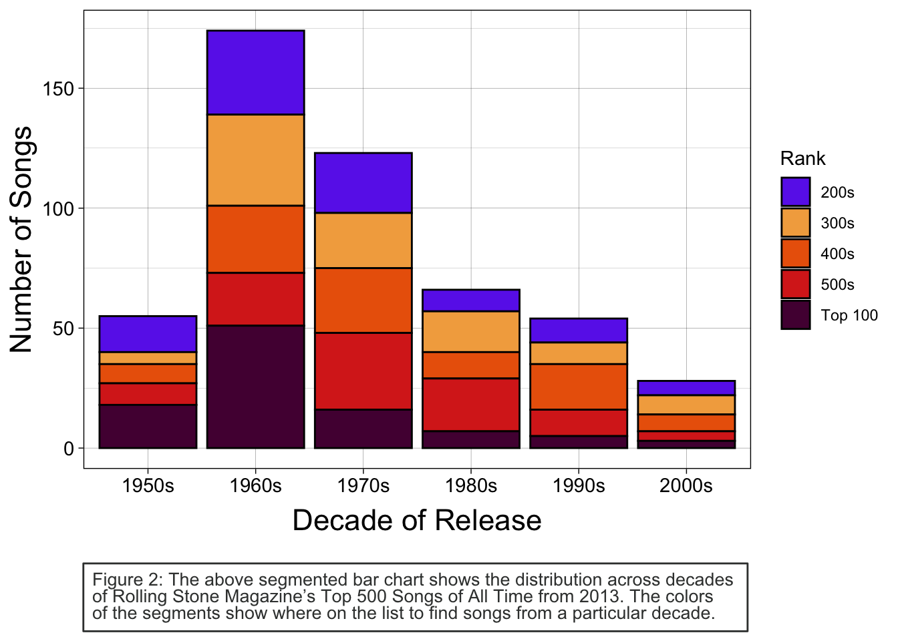
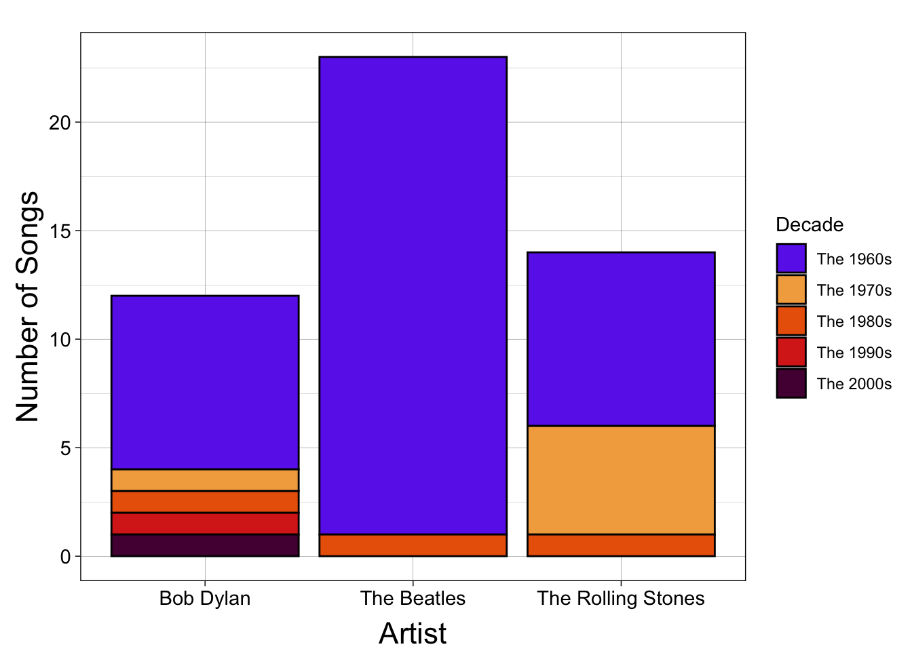

The 1960s were a Great Decade for Music
Through the Decades
Let’s take a look at how the decades shape up compared to one another.
Figure 1 above shows the distribution of the decades represented in Rolling Stone Magazine’s Top 500 Songs of All Time. In this, we can see that the 1960s are the clear leader in terms of representation on the list. In fact, roughly 35% of the songs on the list are from the 60s. The 70s follow at around 25%, and the 50s, 80s, and 90s each represent around 10-13% of the list. For more information on this breakdown, see Table 1. There is a clear trend downward from the 60s to the 2000s, with the 2000s being the least represented decade.
Taking a closer look at where the songs fall in the ranking categories, i.e., Top 100, 200s, and so on, we can see that the 1960s have the most songs in the top 100 among all decades. However, this likely follows from 60s songs’ representation in the list. Interestingly, even though the 70s have many more songs on the list than the 50s, the 50s have slightly more songs in the Top 100.
Rolling Stone’s Top Three Artists
While all the artists on this list are well-deserving of their flowers, there are three artists who stand out among the rest. Combined, these three artists make up nearly 10% of the songs on the list. These artists are, of course, The Beatles, The Rolling Stones, and Bob Dylan


For music lovers and Rolling Stone Magazine subscription-holders, it will come as little surprise that the top 3 artists represented in Rolling Stone’s Top 500 are, in order, The Beatles, The Rolling Stones, and Bob Dylan. The Top Artists chart above demonstrates the margin by which The Beatles’ songs outnumber the other two. The Beatles have a stunning 23 songs on the list—24 if you include John Lennon’s Imagine. The top ranking song from the supergroup is Hey Jude which ranks at 8 on the list. The Rolling Stones follow The Beatles with 14 songs, their first on the list, Satisfaction, at slot 2. Finally, Bob Dylan’s first feature, the number 1 slot on the list, is Like a Rolling Stone.
Supplemental Tables
| Songs on List by Decade | ||
|---|---|---|
| Decade |
Metrics
|
|
| Count | Percent | |
| 50 | 55 | 11.0 |
| 60 | 174 | 34.8 |
| 70 | 123 | 24.6 |
| 80 | 66 | 13.2 |
| 90 | 54 | 10.8 |
| 2000 | 28 | 5.6 |
| Songs on List by Artist | ||
|---|---|---|
| Artist |
Metrics
|
|
| Count | Percent | |
| Bob Dylan | 12 | 2.4 |
| The Beatles | 23 | 4.6 |
| The Rolling Stones | 14 | 2.8 |
| Total | 49 | 9.8 |
| The Top Ten | ||||
| Rank |
Song Identifier
|
Release
|
||
|---|---|---|---|---|
| Artist | Title | Year | Decade | |
| 1 | Bob Dylan | Like a Rolling Stone | 1965 | 60 |
| 2 | The Rolling Stones | Satisfaction | 1985 | 80 |
| 3 | John Lennon | Imagine | 1971 | 70 |
| 4 | Marvin Gaye | What's Going On | 1971 | 70 |
| 5 | Aretha Franklin | Respect | 1967 | 60 |
| 6 | The Beach Boys | Good Vibrations | 1966 | 60 |
| 7 | Chuck Berry | Johnny B. Goode | 1958 | 50 |
| 8 | The Beatles | Hey Jude | 1969 | 60 |
| 9 | Nirvana | Smells Like Teen Spirit | 1991 | 90 |
| 10 | Ray Charles | What'd I Say (Parts 1 And 2) | 1959 | 50 |